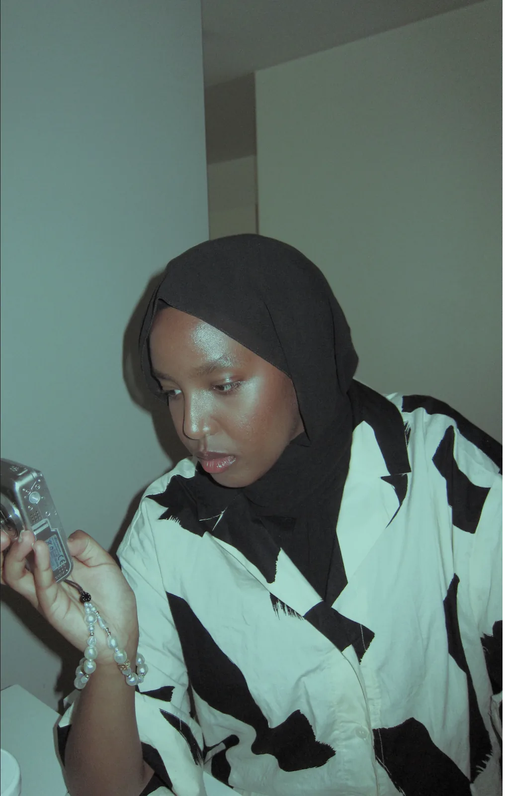

BSc. Informatikk: Design, Bruk, Interaction - Universitetet i Oslo
Delegat i FNs kvinnekommisjon Mars 2024 og Mars 2025.
Administrativt arbeid, planlegging, koordinering og arrangering.
Kundestøtte og hjelper både kunder og samarbeidspartnere. Jeg jobber tett med teamet mitt for å overvåke driftsytelse og iverksette tiltak for å forebygge og løse problemer.
Ledet et prosjekt med fokus på å inkludere og engasjere kvinner i ulike aktiviteter. Ansvarlig for å arrangere aktiviteter og tilby støtte til deltakerne.
Bidro som frivillig under Jentedagen, et arrangement som fremmer kvinner i teknologi og inspirerer flere jenter til å velge STEM-fag. Som frivillig tok jeg imot deltakere med åpenhet og entusiasme, skape en inkluderende atmosfære og støtte arrangementets mål om mangfold og likestilling i teknologi.
Jeg var ansvarlig for foreningens PR-arbeid. Det innebar å håndtere kommunikasjon, bygge opp foreningens profil, synliggjøre aktiviteter og arrangementer for å engasjere studenter ved UiO - Institutt for informatikk.
Arbeidet med temaer som likestilling, representasjon og unges stemmer i globale beslutningsprosesser.
Verktøy & Kodespråk